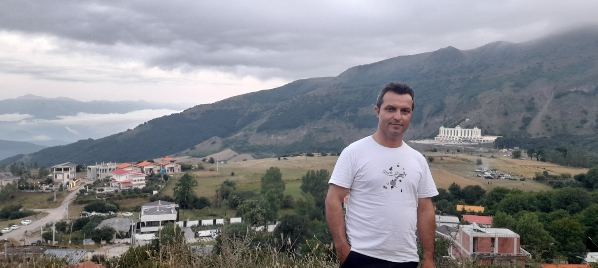

تحصیلات
سوابق تحصیلی
🎓 مدرک تحصیلی
کارشناسی مهندسی منابع طبیعی شیلات
(تکثیر و پرورش آبزیان)
سال ۱۳۹۵
🌊 زمینه تخصصی
شیلات، تکثیر و پرورش آبزیان، تولید و پرورش ماهیهای گرمابی
🎓 تصویر مدرک کارشناسی

مدرک کارشناسی مهندسی منابع طبیعی شیلات – ۱۳۹۵

متخصص حوزه شیلات و آبزیپروری با تجربه در تولید و پرورش ماهیهای گرمابی، فعالیتهای نظارتی و آموزشهای مرتبط با کشاورزی و آبزیپروری.
معرفی کوتاه حرفهای
من محمد قربانی، کارشناس مهندسی منابع طبیعی شیلات با گرایش تکثیر و پرورش آبزیان هستم. زمینه فعالیت حرفهای من در حوزه تولید و پرورش ماهیهای گرمابی و فعالیتهای مرتبط با شیلات و آبزیپروری است.
سوابق تحصیلی
کارشناسی مهندسی منابع طبیعی شیلات
(تکثیر و پرورش آبزیان)
سال ۱۳۹۵
شیلات، تکثیر و پرورش آبزیان، تولید و پرورش ماهیهای گرمابی
تجربههای حرفهای
تولید و پرورش ماهیهای گرمابی در استخر ۲/۵ هکتاری.
فعالیت به عنوان مهندس ناظر پره صیادی در امینآباد انزلی از سوی شیلات.
دورهها و گواهینامههای آموزشی
همگام با کشاورز در استان اردبیل
در سالن همایشهای پارک علم و فناوری
گواهینامه مهارت فناوری اطلاعات
دوره آموزشی عمومی کمکهای اولیه و داروشناسی


افتخارات و فعالیتهای شاخص
انتخاب به عنوان اعضا برتر گروه در امر راهاندازی مزرعه الگویی کشاورزی تلفیقی بر مبنای آبزیپروری در سال ۹۵
کارآفرین نمونه در سال ۹۶ با محوریت ایجاد و مدیریت محصولات باغی تلفیقی با آبزیپروری
حضور در طرح ملی همگام با کشاورز به عنوان مربی آموزش